Aktores
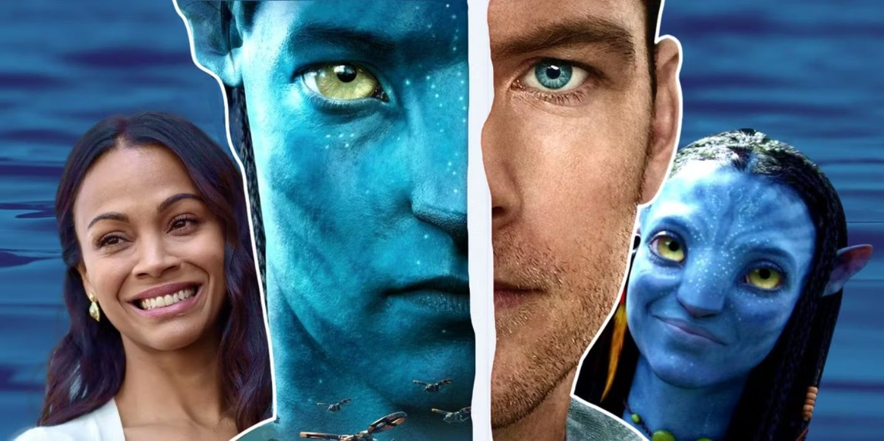
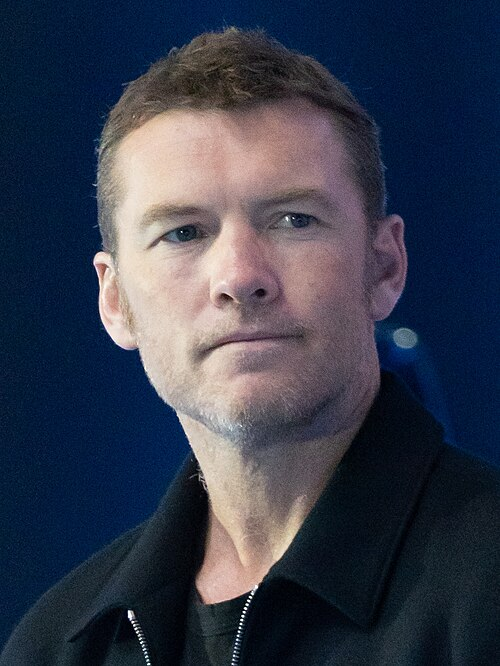
Sam Worthington
Sam Worthington (nombre completo: Samuel Henry John Worthington) es un actor australiano de cine, televisión y doblaje. Alcanzó fama mundial gracias a sus papeles principales en las películas “Avatar”, “Furia de titanes” y su secuela “Ira de titanes”, “Terminator: Salvation”, “Last Night”, “Al borde del abismo” y “Hasta el último hombre”. Biografía Nació el 2 de agosto de 1976 en Godalming, Surrey (Inglaterra). Creció y vivió mucho tiempo en Australia. Estudió actuación en el Instituto Nacional de Arte Dramático (NIDA) en Sídney. Hasta 2006 era conocido principalmente por sus trabajos en series de televisión australianas. Después de 2002 participó en pequeños papeles en películas de Hollywood como “La guerra de Hart” y “El gran rescate”. Vida personal Desde el 28 de diciembre de 2014 está casado con la modelo Lara Bingle (nacida el 22 de junio de 1987). La pareja tiene tres hijos: Rocket Zot (nacido el 24 de marzo de 2015), Racer (octubre de 2016) y River (marzo de 2020). Premios Premio Saturn (2010) — mejor actor por “Avatar”. Nominaciones a los premios MTV (2010): mejor pelea (“Avatar”) y mejor beso (“Avatar”). Nació: 2 de agosto de 1976 (49 años), Perth, Australia Occidental Altura: 178 cm Casado con: Lara Bingle
Wikipedia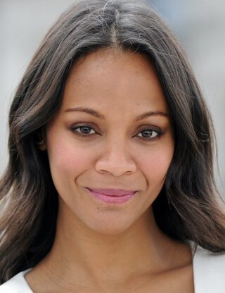
Zoe Saldaña
Zoe Yadira Saldaña-Perego (de soltera Saldaña Nazario) es una actriz y bailarina estadounidense de origen dominicano. Biografía Nació el 19 de junio de 1978 en Passaic, Nueva Jersey (Estados Unidos). Su padre era inmigrante de República Dominicana y su madre de Puerto Rico. Desde chica le interesaba la danza y estudió ballet. A los 17 años volvió a Estados Unidos, donde se unió a un grupo teatral llamado Faces. A finales de los años 90 debutó en televisión en la serie “Law & Order”. Vida personal En 2013 se casó con el artista italiano Marco Perego. La pareja tiene tres hijos: los gemelos Cy y Bowie, y Zen (nacido en 2017). Premios Ganadora del Premio Óscar (2025) como mejor actriz de reparto por “Emilia Pérez”. Premio del Festival de Cannes (2024) a la mejor actriz por la misma película. Premio BAFTA (2025) a la mejor actriz de reparto. Premio del Sindicato de Actores (2025) a la mejor actriz de reparto. Tiene una estrella en el Paseo de la Fama de Hollywood (2018). Datos Nació: 19 de junio de 1978 (47 años), Passaic, Nueva Jersey, EE.UU. Altura: 170 cm Casada con: Marco Perego (desde 2013)
Wikipedia
Sigourney Weaver
Sigourney Weaver es una actriz estadounidense de cine, televisión y doblaje. Es conocida por su papel de Ellen Ripley en la saga “Alien”. Nació el 8 de octubre de 1949 en Nueva York, EE.UU. Estudió literatura inglesa en la Universidad de Stanford y actuación en Yale. Desde 1984 está casada con el director Jim Simpson y tiene una hija. Ganó premios como Globo de Oro, BAFTA y Saturn, y tiene una estrella en el Paseo de la Fama de Hollywood. Datos: Altura: 182 cm
Wikipedia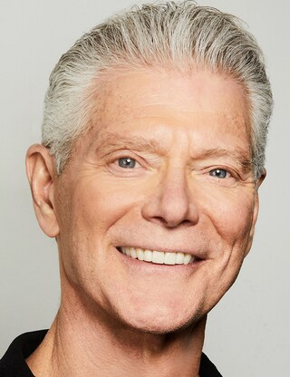
Stephen Lang
Stephen Lang es un actor estadounidense de cine y teatro, además de guionista y productor. Es conocido por sus papeles en películas como “Avatar”. Nació el 11 de julio de 1952 en Nueva York. Estudió literatura inglesa en Swarthmore College y comenzó su carrera en el teatro de Broadway. Participó en varias obras importantes y fue nominado al premio Tony. También ganó premios como Saturn y otros reconocimientos teatrales.
Wikipedia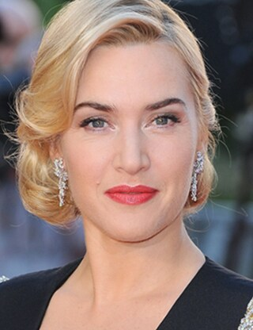
Kate Winslet
Kate Winslet es una actriz británica de cine, televisión y teatro. Es conocida por sus papeles en películas como “Titanic” y “Avatar”. Nació el 5 de octubre de 1975 en Berkshire, Inglaterra. Desde joven estudió actuación y comenzó su carrera en televisión y teatro. A lo largo de su carrera ganó premios importantes como el Óscar, Globo de Oro y Emmy. Tiene tres hijos y ha estado casada varias veces. Datos: Altura: 169 cm
WikipediaOtros actores
Trudy Chacón
Michelle Rodriguez
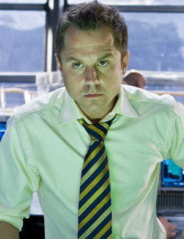
Parker Selfridge
Giovanni Ribisi
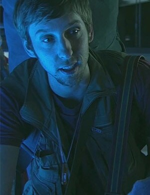
Norm Spellman
Joel David Moore
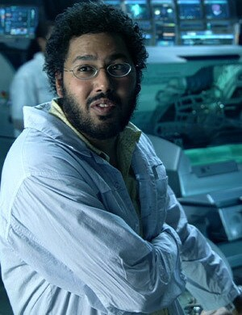
Dr. Max Patel
Dileep Rao
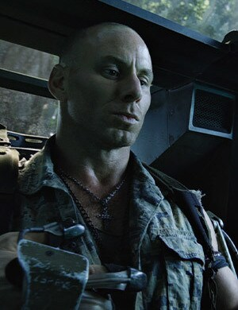
Lyle Wainfleet
Matt Gerald
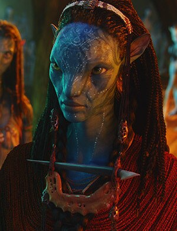
Mo’at
CCH Pounder
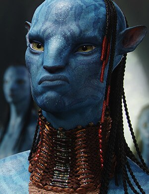
Tsu’tey
Laz Alonso
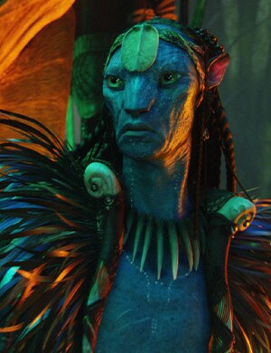
Eytukan
Wes Studi